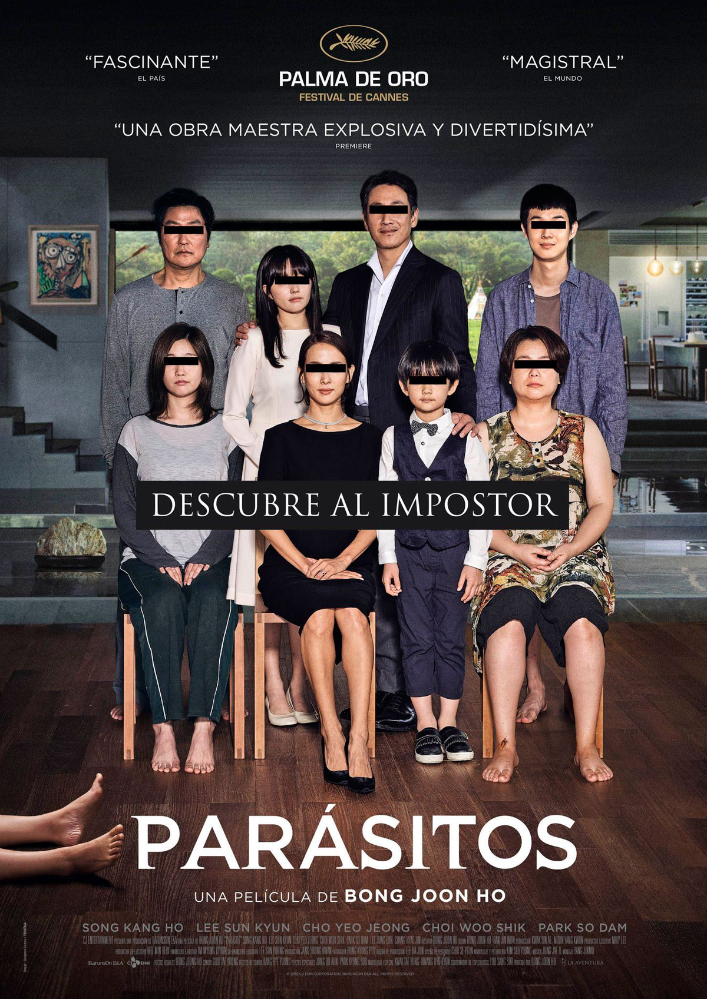

No hay otra forma de decirlo: si te consideras un cinéfilo y no estás ficción coreana a estas alturas, sentimos decirte que estás atrasado. De hecho, muy atrasado. Y no estamos hablando de Parásitos (¡aunque es un buen título para empezar!) o de la serie El juego del calamar (¿habrá segunda temporada?). Queremos que abarques toda la industria del cine que está aportando este país asiático, que es mucha y además de calidad.
Hollywood es sólo una de las capitales mundiales del cine. En Corea del Sur hay todo un tesoro de títulos que ampliarán tus conocimientos de cine internacional y que esconde algunas de las mejores películas que puedes ver en Netflix. Pero al ver algunos de los grandes éxitos, quizá reconozcas que Estados Unidos... está tomando prestado mucho material de origen de nuestros amigos asiáticos, por decirlo de alguna manera suave en lugar de afirmar directamente que les están copiando de forma descarada.

Netflix es consciente del cambio sísmico que se ha producido en el apetito de los espectadores del resto del mundo, hasta el punto de que ha estado abasteciendo discretamente su biblioteca con títulos coreanos (y con más de unos cuantos conceptos originales que ha desarrollado la plataforma de streaming). Estamos aquí para responder a la pregunta de los títulos con los que deberías empezar a abrir este melón cinéfilo
Sin mas que agregar te dejo con las 3 peliculas mas recomendadas por la comunidad:
1 Tune in For Love
Esta película es como inyectarse una buena comedia romántica directamente en vena y dar por terminado el día. Tune in For Love trata de dos personas que parecen gustarse bastante -comparten historias de su encuentro fortuito en una emisora de radio-, pero por mucho que esta conexión perdida intente hacer realidad lo que podría haber sido, se tambalean.
2 Noche En el Paraiso
Una película de mafiosos (o algo así). Cuando un criminal se traslada a la poco conocida isla de Jeju, se encuentra con una mujer que prácticamente ha renunciado a su propia vida. Lo que él no sabe es que ella tiene tanto equipaje del pasado como él.
3 Call
¿Qué pasaría si recibieras una llamada de alguien diciéndote que puede salvar a tu difunto padre? ¿Y si te enteraras de que esa llamada viene de... 20 años atrás? Difícil de creer, pero más difícil de resistir.